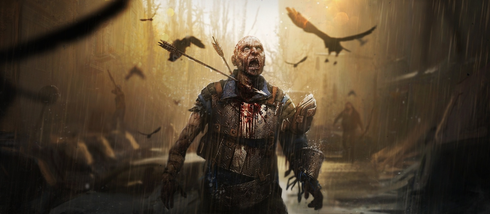

Она вполне может стать игрой года!
С этого и начинается демо-версия, за которой я провёл несколько часов. Главный герой знакомится с Софи (одна из лидеров той банды, что чуть его не повесила), ищет её брата, следит за бандитами, нападает на их базу... Dying Light 2 старательно отрабатывает все геймплейные клише экшенов в открытом мире. Штурм аванпостов, скалолазание по вышкам, детективное зрение, подсвечивающее всё самое важное, — ничего необычного игра даже не пытается предложить. С другой стороны, сам по себе игровой процесс ощущается куда более удобным, чем в первой части. Эйден очень подвижен: он высоко прыгает, хватается за любые уступы и ловко карабкается по стенам. Он с лёгкостью удирает что от зомби, что от обычных людей — не удивлюсь, если при должном уровне прокачки герой буквально научится бегать по головам. К тому же паркур тут действительно приятный. Игра хорошо передаёт скорость Эйдена и предоставляет игроку массу способов блеснуть ловкостью: доступный в демо район плотно застроен небольшими зданиями, чтобы было где побегать по крышам. Вкупе с вышками этот фрагмент Dying Light 2 сильно напоминает классические Assassin’s Creed — по крайней мере, в плане антуража. Игра мне очень понравилась.